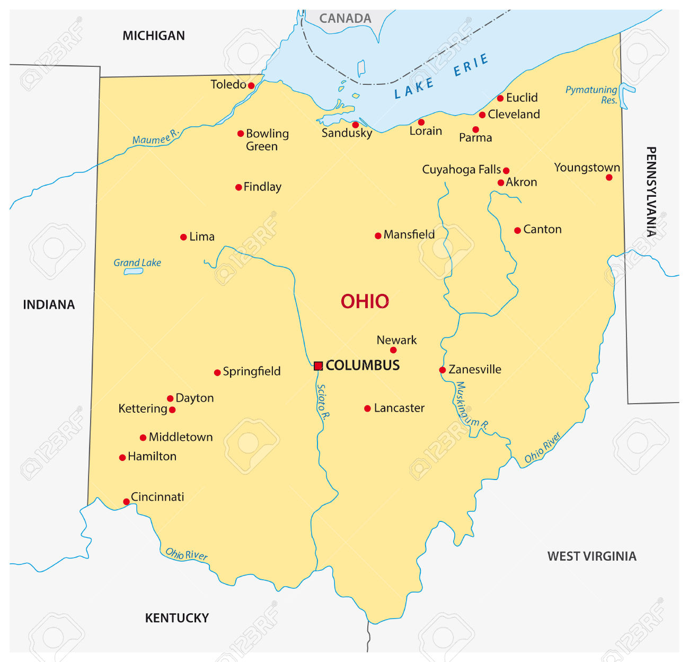
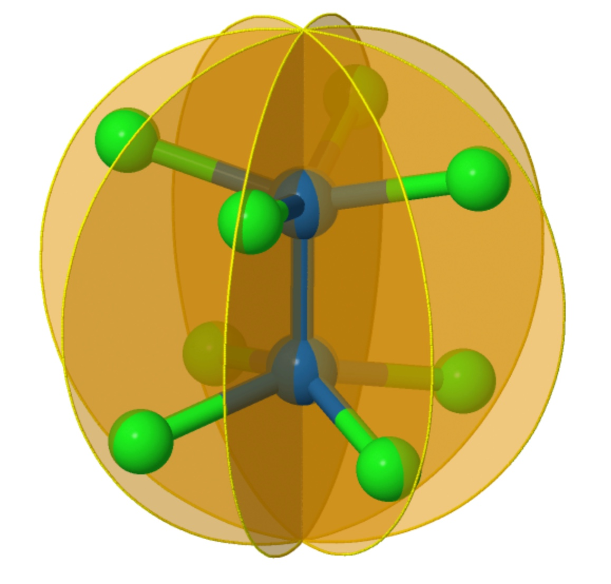
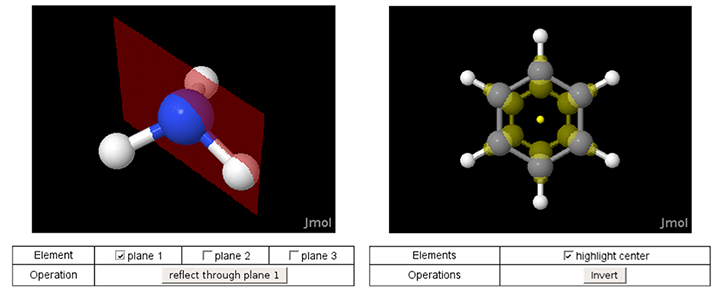
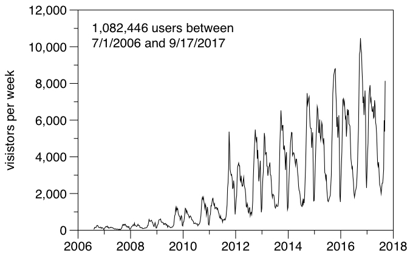
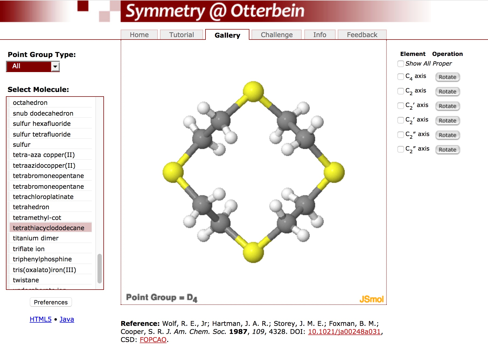

Symmetry@Otterbein
Dean Johnston
20 September 2017
Otterbein University
About Otterbein
- Otterbein University is a small, private, liberal arts university founded in 1847
- Approximately 3000 students enrolled
- Only undergraduate programs in most areas
- The Department of Chemistry has six full-time faculty and four part-time faculty
Where is Otterbein?

A Brief History of Symmetry@Otterbein

The First Version
- "Version 1.0" of the Otterbein symmetry website appeared in 2000 and utilized the Chime plug-in for the Netscape Navigator browser. It included illustrations of symmetry elements and animations of symmetry operations.
Chime to Jmol
- In 2006, the website was updated from Chime to Jmol, the new Java-based molecular viewer that brought many more features.
- With support from the National Science Foundation from 2006-08, the website was expanded to include the Symmetry Gallery and Symmetry Challenge.

Tracking Visitors

- About 60% of the users come from outside the US.
- Currently, about 25% are using a mobile device.
Current and Future Work

Current Materials
- Three central pages
- Symmetry Tutorial - a short introduction to molecular symmetry
- Symmetry Gallery - a collection of over 100 molecules and models with interactive display of symmetry elements and operations
- Symmetry Challenge - an interactive, guided flowchart for point group determination
Current Materials
- Related pages (some at Crystals@Otterbein)
- Symmetry@Otterbein: Space Groups - example space groups with interactive representations and animations of symmetry operations
- Representations of the Crystallographic Point Groups - a "decorated solid" version using geometric shapes with colored faces to illustrate the 32 crystallographic point groups
- Crystal Packing - an illustration of the layers and packing simple metallic and ionic solids
Motivations (for new pages)
- Current pages are not mobile-friendly
- they have small controls that are difficult to navigate
- the design does not adapt well to small or skinny (portrait) screens
- Code base is difficult to maintain
- combination of Jmol scripting language and JavaScript
- separate but overlapping code for each project
New Development
- All new pages are being developed using the Angular framework
- ⇒ modular development of components (controls and views) and services (io, drawing, animation)
- ⇒ development using a single code base
- Material Design components for consistent and mobile-friendly controls

DEMO
Acknowledgments
Thanks to all who have provided support, encouragement, and suggestions over the years.
- Steve Koch (SUNY Stony Brook) for discovering my website and encouraging further development
- Bob Hanson (St. Olaf) for his amazing work on Jmol (and JSmol)
- Tobin Marks (Northwestern) for introducing me to the beauty of symmetry and group theory
- And the CCDC for providing an endless source of unique and interesting examples